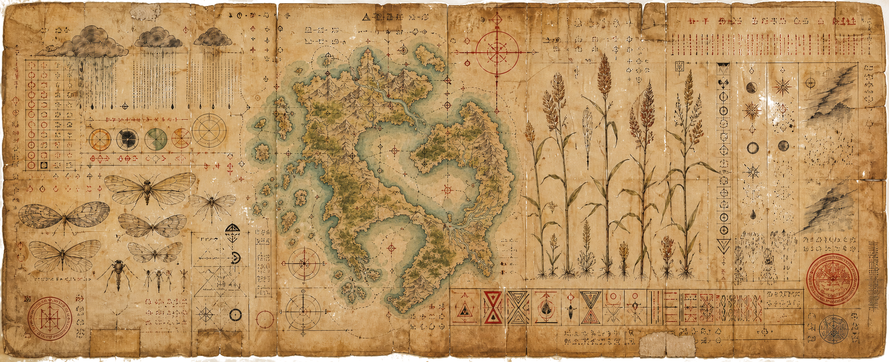

Current condition
Library found
The larger Library of Tærüș has been located, but most of its rooms remain unentered. This page marks the first collection chosen for recovery: The Sealed Annals of Abaz.
Library of Tærüș
Collection: The Sealed Annals of Abaz

The Library has been found. One collection is being catalogued.
Welcome to the Library of Tærüș (TAIR-oosh), a discovered vault beneath the Kera Headlands. You are standing before one section of it: the Sealed Annals of Abaz, a continental mass of nine kora-ranges on the world of Orun Bara, within the Irunma system. It is suspected that this collection holds records of the continent's species, cities, weather systems, witnesses, failures, laws, and uncatalogued items still under review.
This collection will open when enough Abazian fragments have been catalogued to survive their first public reading.
Current condition
The larger Library of Tærüș has been located, but most of its rooms remain unentered. This page marks the first collection chosen for recovery: The Sealed Annals of Abaz.
Unsealing state
These records concern Abaz alone. Other shelves, vaults, and catalogues within Tærüș remain unnamed until their contents begin to surface.
Unsealing Register
visible before launch
SAA:UL:0001
outer inscription recovered
queued
SAA:WE:0472
weather-kin evidence stable
partial
SAA:TR:0188
term found in six ledgers
sealed
SAA:OR:0000
orientation record not issued
pending
Public Recovery Log
Year 0 PU
Year 0 PU / Day 001
SAA:OR:0000
The recovered body of Abaz records was entered under the title The Sealed Annals of Abaz.
Year 0 PU / Day 001
SAA:UL:0001
The Library of Tærüș was confirmed as the containing vault. The Sealed Annals of Abaz were assigned to one named collection within it.
Year 0 PU / Day 001
SAA:DS:0001
A display standard was opened to govern public record tone, colour use, image treatment, and release states.
Year 0 PU / Day 001
LOT:PR:0001
A parent-level personnel class was reserved for public profiles attached to the Tærüș recovery team.
Year 0 PU / Day 001
SAA:OR:0002
Abaz was entered into the public orientation record as a continental mass of nine kora-ranges on Orun Bara, within the Irunma system.